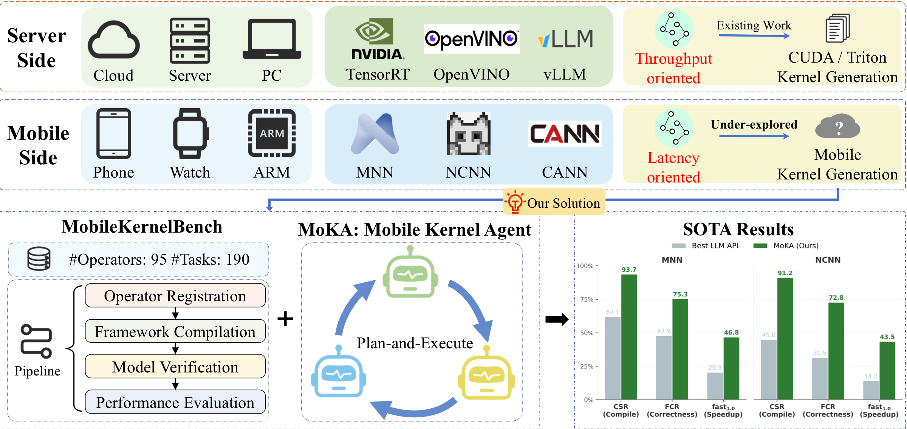
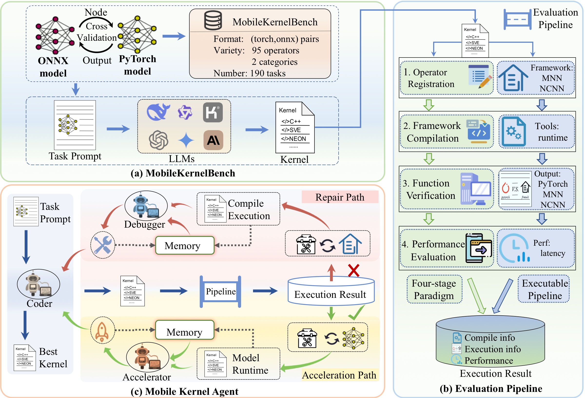
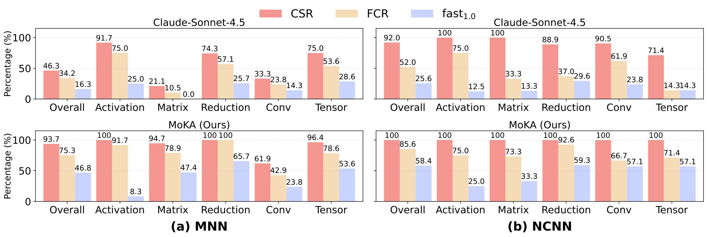
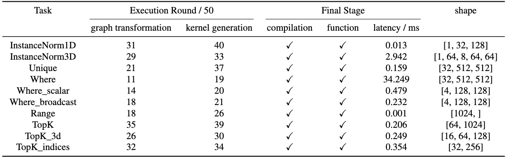
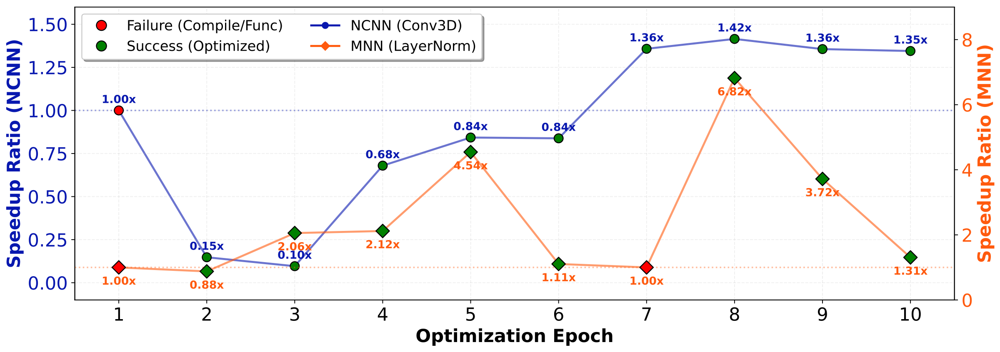

MobileKernelBench: Can LLMs Write Efficient Kernels for Mobile Devices?



Overview. As illustrated above, mobile kernel generation is not a trivial extension of existing server-side methodologies, but rather a fundamentally distinct proposition. The inherent gap between server-class and mobile environments manifests primarily across three critical dimensions. (1) Computation objectives: Server platforms optimize large-scale training and high-throughput computation under abundant resources, whereas mobile devices operate under strict power, memory, and thermal constraints to prioritize lightweight and low-latency inference tummalapalli2026llm,lee2019device. (2) Execution paradigms: CUDA-centric server frameworks naturally support dynamic execution and direct operator programming, while mobile inference engines depend on static computation graphs that require both intermediate representation transformation and backend-specific kernel implementation for deployment. (3) Deployment ecosystems: the mobile ecosystem is highly fragmented across inference engines, vendor runtimes, and heterogeneous hardware architectures, making it extremely difficult to establish unified standards for kernel generation, deployment, and evaluation. Consequently, these profound disparities render the direct migration of existing kernel generation paradigms entirely infeasible. Constructing a unified, systematic pipeline to automatically generate and evaluate kernels for such heterogeneous edge environments constitutes a formidable challenge.
While existing studies have shown that LLMs can generate CUDA/Triton kernels, mobile kernel writing remains an underexplored task due to significant hardware and framework disparities. To bridge this gap, we introduce MobileKernelBench, a novel benchmark and evaluation pipeline for mobile kernels. Moreover, we propose Mobile Kernel Agent (MoKA), a multi-agent framework that enhances generation abilities and achieves remarkable performance improvement on this new task.Abstract
While large language models (LLMs) excel at generating desktop-class GPU kernels, their applicability to mobile devices remains an unexplored frontier. Due to the gap in computation objectives, execution paradigms, and deployment ecosystems, directly transferring CUDA-centric methods to the mobile domain is not straightforward. To address this, we present the first systematic investigation into LLM-driven mobile kernel generation. % We introduce MobileKernelBench, a comprehensive benchmark tailored to the hardware characteristics and algorithmic demands of mobile inference frameworks. Coupled with this benchmark, we propose a standard and automated evaluation pipeline that provides a universal paradigm for operator evaluation. To address the challenges of end-to-end kernel generation with LLMs, we propose the Mobile Kernel Agent (MoKA), a multi-agent system that decomposes the task and comprehensively improves LLM capability. Instantiating our pipeline on two mainstream frameworks (MNN and NCNN), baseline evaluations reveal that standard LLMs struggle significantly: compilation failure rates reach 53.7% on the structurally complex MNN framework, functional correctness peaks at merely 52.0% across both frameworks, and fewer than 12.0% of operators achieve speedups. MoKA overcomes these bottlenecks, boosting compilation success to 93.7% and delivering measurable latency reductions over native libraries in 46.8% (MNN) and 58.4% (NCNN) of the generated kernels. Notably, MoKA demonstrates obvious generalization by successfully synthesizing unsupported operators in NCNN framework. Our study suggests that LLMs are capable of mobile kernel generation, and agentic methods can effectively enhance this ability.
Method Overview

System Architecture Overview. The system consists of two core components: (a) MobileKernelBench: A bidirectionally validated PyTorch-ONNX benchmark ensuring structural consistency and output equivalence. (b) Evaluation Pipeline: A rigorous four-stage automated protocol assessing compilation, functional correctness, and on-device latency across different frameworks (e.g., MNN, NCNN). (c) Mobile Kernel Agent (MoKA): Empowered by specialized framework-aware tools and dual-tier memory, MoKA iteratively routes generated kernels through Repair or Acceleration paths to yield optimized executables.

Benchmark Composition and Operator Coverage. Overview of MobileKernelBench. This benchmark comprises 190 tasks derived from 95 primitive operators. These operators are classified into 12 categories, encompassing common operators found in the ONNX ecosystem. A primitive operator may yield multiple distinct tasks based on differences in input shapes or parameter settings.
Experimental Results - Benchmark

Comprehensive LLM Benchmark Results. We benchmark six representative LLMs, including proprietary models (GPT-5, Claude-Sonnet-4.5, Gemini-2.5-Flash) and open-source models (LLaMA-3.1-405B-Instruct, DeepSeek-R1-0528, and Qwen3-235B-A22B-Thinking), using a standardized prompt and default API settings. The results reveal a clear gap between general code generation ability and practical deployment readiness on mobile frameworks. Although leading proprietary models achieve compilation success rates of around 47%, their performance drops substantially under strict functional verification. Open-source models perform significantly worse, with functional correctness rates ranging from only 6.3% to 13.7%, highlighting the difficulty of synthesizing valid operators for low-resource frameworks. Performance optimization is even more challenging: even the best model, Claude-Sonnet-4.5, produces only 16.3% of kernels that match or exceed the baseline speed, and merely 4.7% achieve significant speedups (>1.5×). Overall, these results indicate that base LLMs struggle to generate correct and hardware-efficient mobile kernels without additional domain knowledge, feedback mechanisms, or system-level guidance.
Experimental Results - MoKA

MoKA performance on MobileKernelBench across MNN and NCNN frameworks. We evaluate MoKA initialized with Claude-Sonnet-4.5, comparing it against the single-query baseline (Base) and a 10-sample diversity baseline (@10). Bold values indicate the best performance, and values in parentheses denote the absolute gains over the pass@10 baselines.

Evaluation on generalization ability. We evaluate MoKA's ability on the unsupported operators in NCNN framework. Ten tasks are selected to assess both graph and kernel generation abilities. We report the first round in which the agent produces a correct implementation in 50 rounds.
Case Study

Case Study. We present two case studies on Convolution3D and LayerNorm, demonstrating that MoKA possesses strong repair capability and can effectively apply diverse acceleration strategies.
BibTeX
@misc{zou2026mobilekernelbenchllmswriteefficient,
title={MobileKernelBench: Can LLMs Write Efficient Kernels for Mobile Devices?},
author={Xingze Zou and Jing Wang and Yuhua Zheng and Xueyi Chen and Haolei Bai and Lingcheng Kong and Syed A. R. Abu-Bakar and Zhaode Wang and Chengfei Lv and Haoji Hu and Huan Wang},
journal={Conference/Journal Name},
year={2026},
eprint={2603.11935},
archivePrefix={arXiv},
url={https://arxiv.org/abs/2603.11935},
}